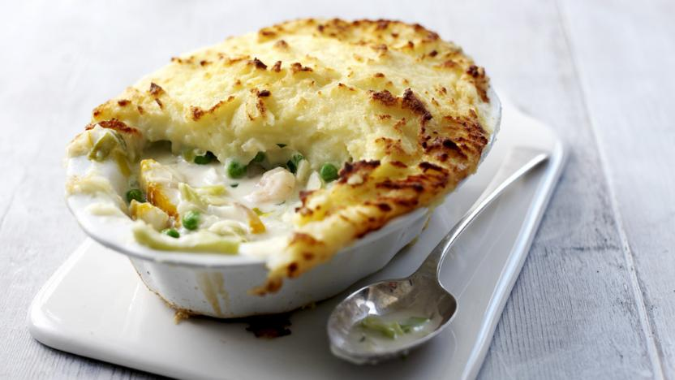

Fish Pie!

How to make fish pie
This fish pie recipe has bags of flavour from the smoked haddock, prawns and cod.
It's the perfect comfort dinner. Yum!
Ingredients
For the mashed potatoes
- 1kg/2lb 4oz potatoes, cut into 5cm/2in chunks
- 50g/2oz butter
- 100g/3½ oz crème fraîche
- 3 tbsp warm milk
- Pinch pf salt and white pepper
For the filling
- 500ml/1 pint milk
- 250g/9oz Smoked Haddock
- 200g/7oz cod loin
- 1 onion
- 1 bay leaf
- 2 leeks, washed and chopped
- 50g/2oz butter, plus 25g/1oz for dotting on top of the pie
- 1 tbsp olive oil
- 3 tbsp plain flour
- 100g/3½oz raw king prawns
- 50g/2oz frozen peas
- 1 tbsp finely chopped parsley
- 1 unwaxed lemon, finely grated zest only
Steps
- Preheat the oven to 190C/170C Fan/Gas 5.
- Boil potatoes until tender. Drain and mash them with the butter, crème fraîche and warm milk and season with salt and pepper.
Set aside and keep warm.
- Heat the milk in a large pan, then add the smoked haddock and cod. Cut the onion in half, make an incision in one of the halves and insert the bay leaf.
Push the cloves into the same onion half and place this into the pan with the milk and fish.
Bring the milk to the boil, then reduce the heat and simmer gently for 6–7 minutes.
- Meanwhile, finely chop the remaining onion half and the leeks.
Heat the butter with the olive oil in a small frying pan and gently fry the onion and leeks for 4–5 minutes, until softened but not browned.
- Remove the fish from the pan, and set aside to cool slightly. Keep the milk in the pan.
- Add the flour to the leeks and stir well. Fry for 1 minute, stirring frequently. Gradually spoon in the milk from poaching the fish, and stir it in well each time.
Add all the milk in this way, and heat gently until the sauce has thickened. Taste the sauce for seasoning, and add more salt or pepper if necessary.
- Break the fish into chunks, being careful to feel for any bones and remove any skin, then fold the fish pieces into the sauce. Add the raw prawns and frozen peas to the mixture.
- Place an ovenproof pie dish onto a baking tray (this will catch any of the mix that bubbles over when cooking). Spoon the fish mixture into the bottom of the dish.
Sprinkle the parsley and lemon zest over the top.
- Carefully top with the cooled mashed potato. Use a fork to spread the mash over the pie and create a rough texture on top.
Dot the pie with the remaining half of the butter and place in the oven for 25–30 minutes, or until golden-brown and bubbling.
Recipe Tips
You can make the mash for this fish pie recipe in advance. (Mash freezes really well.) Frozen fish works brilliantly and can be poached directly from frozen.
A frozen fish pie mix comes in very handy.
Back to the Top